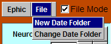
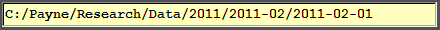
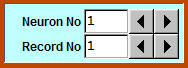
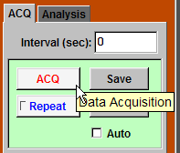
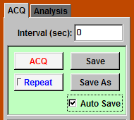
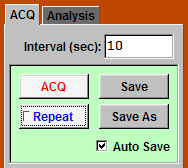

The structure of the files is organized to facilatate recording and data analysis. There are three layers in the file structure. The first layer is the date folder, which contains all data collected on one day. The second layer is the neuron folder, which contains all data collected from one neuron or one slice. The third layer is the record folder, which contains settings (Settings.set), electrophysiology data (ITC.dat), and imaging data (EDT.dat).
|
Before doing the first data acquisition, you need to create a date folder. To create a new date folder, click "File -> New Date Folder". Follow the instructions to create a new date folder. |
 |
| The current date folder is shown in a light yellow box. |  |
|
The current neuron number is displayed in the "Neuron No" box. To increase or
decrease the neuron number, click the respective triangle button on the right.
To go to a specific neuron number, type in the number in the "Neuron No" box and
press "Enter". The current record number is displayed in the "Record No" box. To increase or decrease the record number, click the respective triangle button on the right. To go to a specific record number, type in the number in the "Record No" box and press "Enter". To exit Ephic, press "Esc" on the keyboard. |
 |
|
To do the first recording with the default settings, click "ACQ -> ACQ". To save the data, click "ACQ -> Save". |  |
| You can save the data automatically during data acquisition by checking "Auto Save" box. |  |
|
Ephic can repeat data acquisition. For example, if you want to repeat data acquisition
every 10 seconds, type 10 in "Interval (sec):" box, press "Enter" to update
the change, then click "Repeat" button. To stop the repetition, click
"Repeat" button again. When "Auto Save" is checked, Ephic saves the data
and increases
record number automatically. In some rare occations, you might want to save the data to a differenct record folder. To do so, click "Save As" button and follow the instructions. |  |